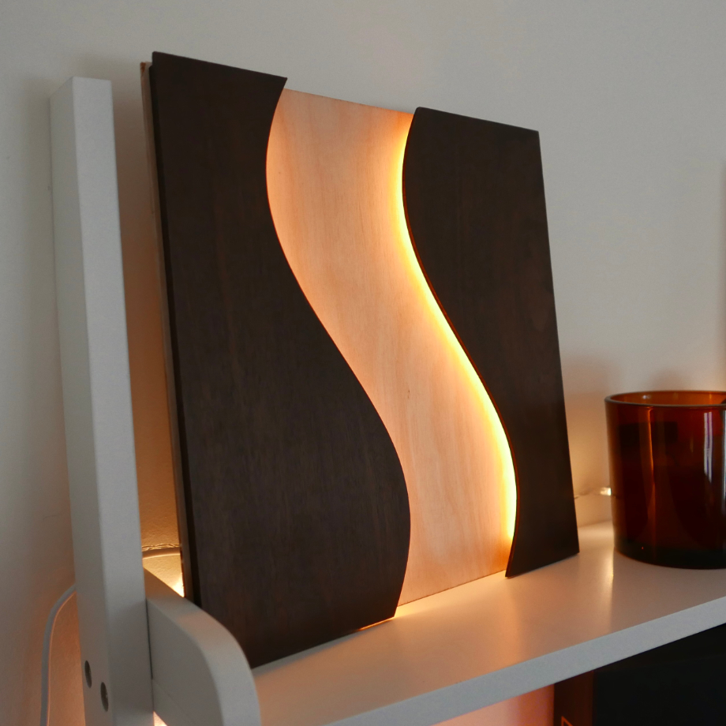
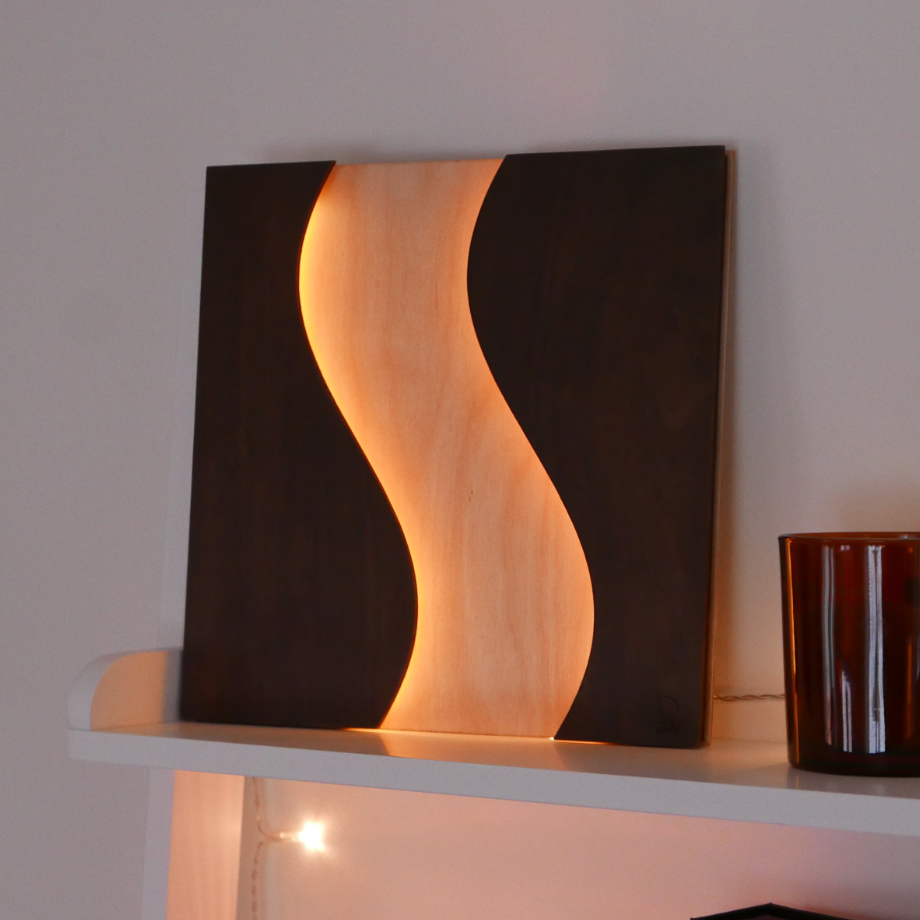
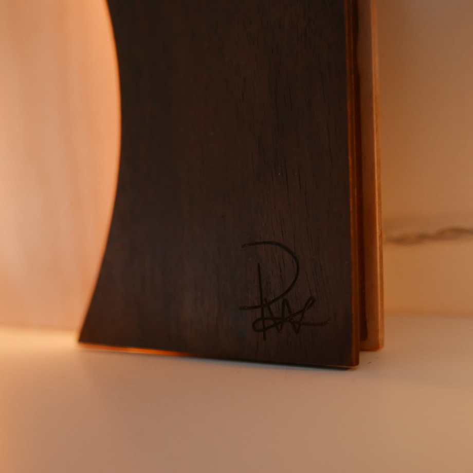
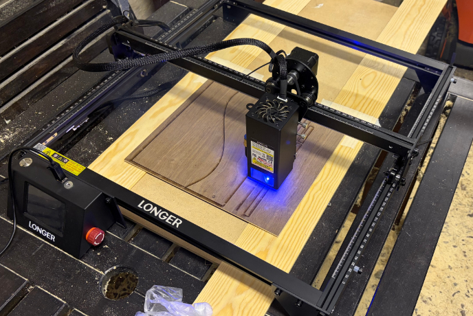
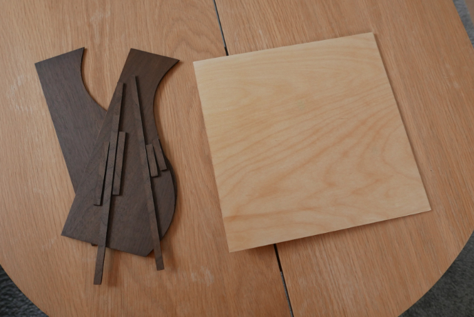
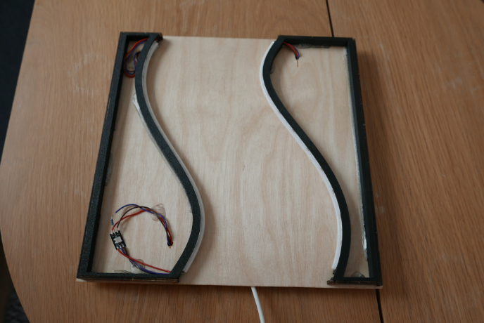
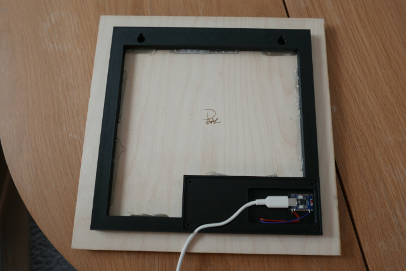

Jag fick låna en laserskärare så va ju bara tvungen att bygga något
Blev en liten version av Trätavla
Skippade ramen för att göra den lite annorlunda




Fick designa om hela grejen så den gick att skära ut med laser sen va de bara att börja skära
Kändes inte så bra att använda denna i lägenheten så va duktig och gjorde de i ett garage
Har en del att lära mig om hur man fixar inställningarna på laser för att de ska bli perfekt men de va kul att testa

Det blev lite efterarbete mest för att jag inte hade inställningarna helt rätt på laser men behövde bara slipa lite iallafall
Jag betsade sedan de mörka delarna och drog på ett lager paraffinolja på de ljusa delarna för att göra de lite mer tåliga

Jag kunde 3d printa delarna för mellanrummet på denna istället för att göra allt i trä men jag satte trälister runt om där man kunde se de för att göra de lite finare
Körde på en COB list för att slippa köra med diffusor och de blev väl okej, gillar nog ändå att 3d printa en diffusor för att göra de lite snyggare

Jag designade den så att man inte skulle kunna se några kablar så de va lite pilligt att få kablarna mellan de 2 delarna genom 3d printen
Använde en ESP32 zero för de va de jag hade över hemma och den är liten
Sitter ett lock över ESPn så man slipper se den också men de är inte med på bilden